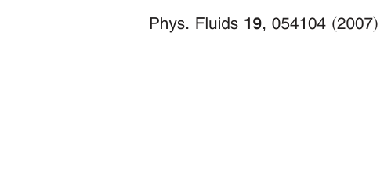
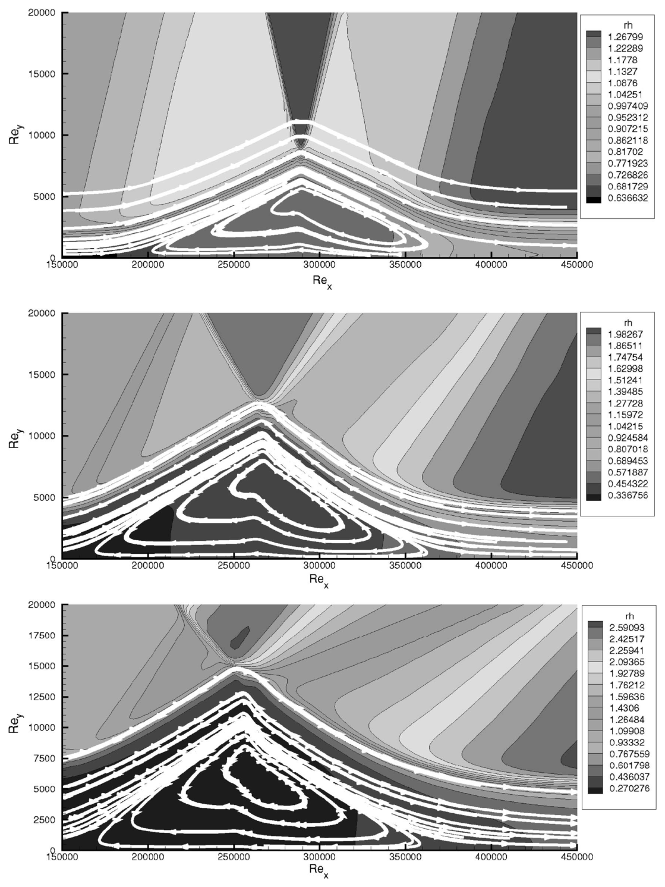
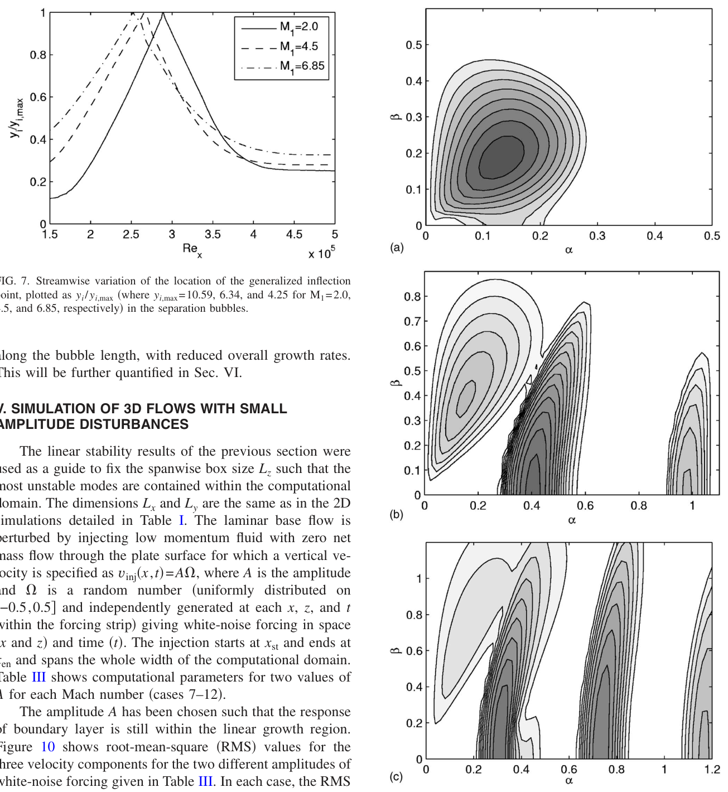
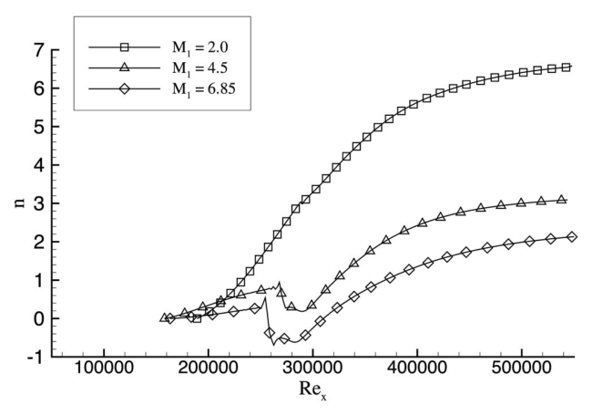

01中文摘要
用直接数值模拟和线性稳定性理论研究斜激波入射平板边界层中不稳定扰动的马赫数效应。固定激波撞击点雷诺数和分离泡长度雷诺数，设置马赫2.0、4.5和6.85三个工况，以白噪声和谐波强迫引入小扰动。马赫2.0时斜模态占优，模拟与理论一致；马赫4.5和6.85时，扰动能量在激波撞击分离剪切层顶部处大幅下降，最不稳定第二模态在分离泡内增长很弱，而流向结构显著增长。平行流LST对高马赫工况预测较差，PSE在2.0和4.5时对主频和波数给出良好定性预测；有限幅值三维模拟显示非线性破缺至湍流，叠加Mack模态会加速破缺。
02阅读说明
期刊论文（DNS + 线性稳定性理论 LST + 抛物化稳定性方程 PSE 数值研究），Physics of Fluids 19, 054104 (2007)，共16页。全文完整；8节、3张表、19幅图，bundle抓取Fig.1–Fig.16共16张（Fig.17–19无抓图）。文本层希腊字母与部分符号丢失，已对照PDF第3–4、6页核正式(1)–(12)；其余公式依据bundle正文与符号关系。信息完整度高。 文章类型：期刊
03一句话核心与三句话摘要
固定入射雷诺数与分离泡长度雷诺数，DNS/LST/PSE表明高马赫数SBLI泡内扰动增长弱、平行流LST失效。
- SBLI中的转捩受马赫数、雷诺数、分离泡长度等多参数耦合影响，已有研究多为单一马赫数，且LST/PSE在强分离泡中的适用性尚不清楚。 AI概括
- 对M1=2.0、4.5、6.85的平板层流SBLI，在Re_xi=3×10^5、Re_LB=2×10^5、绝热壁条件下开展2D/3D DNS并结合LST与PSE，发现M=2时斜模态主导（n≈6–7），高马赫数下气泡顶点扰动能量骤降、第二模态净增长仅约一个量级。 原文明确
- 平行流LST在高马赫数给出显著偏离的响应频率与展向波数，且无法预测顶点能量骤降；PSE可定性预测主导模态但激波后增长被低估；有限幅值下斜模态主导早期breakdown，叠加Mack模可使转捩提前。 原文明确
04核心内容清单
| 要点 | 类型 | 重要性 | 原文依据 | 属性 |
|---|---|---|---|---|
| 通过固定Re_xi=3×10^5与Re_LB=2×10^5、采用绝热壁，把马赫数效应从雷诺数与泡长效应中分离出来。 | 实验设计 | A | 第5页/054104-5，Sec.III | 原文明确 |
| 随M1由2.0升至6.85，分离泡长度约由271降至58倍位移厚度、泡高由8.70降至2.95，气泡更不对称且向上游偏移。 | 关键结果 | A | 第6页表II、第5页正文、第7页Fig.6 | 原文明确 |
| M=2时斜第一模态主导，LST峰值(α,β)=(0.13,0.18)，cph=0.54、波角53°，DNS/PSE结果一致。 | 稳定性结果 | A | 第6页/054104-6，Fig.8(a) | 原文明确 |
| M=4.5与6.85最不稳定的是Mack第二模态；第二模态局部增长率高但沿泡净增长很弱。 | 稳定性结果 | A | 第6–7页，Fig.8(b)(c)、第12页Fig.16 | 原文明确 |
| 高马赫数下激波入射到分离泡顶部处出现扰动能量大幅下降，平行流LST无法预测。 | 关键现象 | A | 第8页/054104-8，Fig.10；第14页结论 | 原文明确 |
| DNS n因子：M=2达6–7，M=4.5与6.85仅约2。 | 定量对比 | A | 第9页/054104-9，Fig.12 | 原文明确 |
| PSE可定性预测主导频率与展向波数（M=4.5 β=0.95、λz=6.6δ1*），但激波后恢复段增长率被低估。 | 方法评估 | A | 第12–13页，Fig.17–18 | 原文明确 |
| 高M近壁结构以流向为主，与剪切层曲率参数C相关性弱，作者不认为由Görtler机制主导。 | 机制判断 | B | 第9页/054104-9 | 原文明确 |
| M=4.5非线性算例中斜模态A=0.1约在Rex≈5×10^5击穿，叠加2%第二模态提前至约4×10^5。 | 非线性结果 | A | 第13–14页，Fig.19 | 原文明确 |
| M=6.85在Rex≈5.5×10^5前未发生breakdown，说明其相对更抗转捩。 | 非线性结果 | B | 第14页，Conclusions | 原文明确 |
| 三种工况统计量时间不变，分离泡流动在所研究压力比下为对流不稳定。 | 稳定性判据 | A | 第8页/054104-8，Fig.10讨论 | 原文明确 |
| 平行流LST在高M SBLI中仅有有限用途；更强相互作用的压力比可能使不稳定机制转为绝对不稳定，使PSE失效。 | 适用边界 | B | 第14页，Conclusions | 原文明确 |
05引言：研究问题与领域缺口
【原文明确】SBLI广泛存在于跨声速、超声速与高超声速流动中，常导致边界层分离、进气道性能下降、阻力增加与壁面热流增强。已有SBLI研究多针对充分发展湍流边界层；转捩对SBLI的影响是当前热点，但转捩本身受来流扰动、壁面粗糙度、壁温与马赫数等多因素影响，尚未充分理解。压缩性LST（Mack）表明低马赫数由Tollmien-Schlichting第一模态主导，高马赫数出现第二、第三等Mack模态并成为最不稳定扰动。已有SBLI稳定性研究（Pagella等M=4.8、Balakumar等M=5.373、Teramoto LES M=2）多为单一马赫数或单一构型，且结果受数值分辨率限制。【AI概括】本文的缺口是：如何在排除雷诺数与分离泡长度变化的条件下，单独分离马赫数对分离泡内扰动增长与转捩路径的影响。作者固定激波入射位置雷诺数Re_xi与分离泡长度雷诺数Re_LB、采用绝热壁，对M1=2.0、4.5、6.85三种来流做系统对比，并检验平行流LST/PSE的适用边界。
06流动条件与几何构型
| 项目 | 数值/描述 | 依据 | 备注 |
|---|---|---|---|
| M1=2.0二维基准工况（细网格case 2） | Re_δ1*=732.63；β1=33.075°；p3/p1=1.480；Tw=1.68；计算域(680,30)δ1*；网格513×193 | 第5页表I | Re_xi=3×10^5、Re_LB=2×10^5、绝热壁 |
| M1=4.5二维基准工况（case 4） | Re_δ1*=1899.70；β1=16.200°；p3/p1=2.667；Tw=4.40；计算域(260,15.118)δ1*；网格385×193 | 第5页表I | 同Re目标；Tw为表I给出的无量纲壁温，绝热 |
| M1=6.85二维基准工况（case 6） | Re_δ1*=3455.00；β1=11.800°；p3/p1=4.121；Tw=8.83；计算域(150,15.125)δ1*；网格385×193 | 第5页表I | 粗网格case 5为257×129 |
| 2D验证算例（Hakkinen） | M1=2.0；Re_xi=2.96×10^5；Re_δ1*=950；p3/p1=1.4；β1=32.58°；域(400,115)δ1*；网格151×128 | 第4页/054104-4 | 与Katzer、Wasistho及实验对比 |
| 2D验证算例（Sandberg，无激波） | M1=1.6；Re_δ*=438.802；A_dist=0.0002 | 第4页/054104-4 | 验证小扰动增长与模态形状 |
| 3D白噪声强迫（cases 7–12） | M=2.0：Lz=64δ1*，网格513×129×65，A=0.001/0.002，强迫带x=51.86–59.64；M=4.5：Lz=32δ1*，网格257×129×65，A=0.01/0.02，x=20–23；M=6.85：Lz=32δ1*，网格257×129×65，A=0.01/0.02，x=11–12.65 | 第9页表III | 吹吸速度vinj=A·χ，χ为[-0.5,0.5]均匀随机数 |
| 3D斜模态强迫（cases 13–16） | M=2.0：Lz=32δ1*，513×129×33与769×193×49，A=10^-6；M=4.5：Lz=6.6δ1*，257×129×13与385×193×19，A=0.001 | 第9页表III、第10页 | 固定单一展向波长；用于与LST/PSE对比 |
| M=4.5非线性breakdown算例 | Lz=8δ1*，网格257×129×17；Δx+=22.0、y1+=1.0、z+=11.0；斜模态A=0.1、第二模态A=0.02或0.1 | 第13页 | 强迫v=A exp[-0.125(x-25.0)^2] sin(ωt)cos(βz)+2%随机噪声 |
| 壁面热条件 | 所有工况绝热壁；入口壁温等于绝热壁温 | 第3、5页 | 用于排除壁面热传导影响 |
07核心现象与关键参数
| 参数 | 定义 | 数值 | 关系/说明 | 依据 |
|---|---|---|---|---|
| 激波入射位置雷诺数 Re_xi | 以来流速度、来流粘性与平板前缘到无粘激波入射点的距离构造 | 3×10^5（三个马赫数相同） | 与Re_LB共同固定，以隔离马赫数效应 | 第5页/054104-5 |
| 分离泡长度雷诺数 Re_LB | 以分离泡长度LB为特征长度的雷诺数 | 目标2×10^5；表II细网格为198681、198462、202268 | 通过Fig.5选择各M的p3/p1来逼近 | 第5页、第6页表II |
| 分离泡长度 LB | LB=xr−xs | M=2.0：463.17−191.98≈271.2δ1*；M=4.5：169.30−64.83≈104.5δ1*；M=6.85：91.68−33.33≈58.4δ1* | 由表II数值相减得到（AI计算），原始数据为xs、xr | 第6页表II |
| 泡高 hb | 壁面到分离流线最高点的距离，另给最高点位置xb | M=2.0：8.70（xb=327.04）；M=4.5：4.60（116.08）；M=6.85：2.95（59.84）δ1* | 随M升高而降低，长高比增大 | 第6页表II |
| M=2.0斜第一模态 | (α,β)平面最大时间增长率位置 | (0.13,0.18)；cph=0.54；波角53° | 密度加权对流速度估计Uc=0.56，与cph吻合；Sandham-Reynolds公式估波角46° | 第6页/054104-6，Fig.8(a) |
| M=4.5斜第一模态 | 同一稳定性图上的斜模态峰 | (0.14,0.37)；波角68°；cph=0.72；Uc=0.68 | 简单估计波角65° | 第6页，Fig.8(b) |
| M=4.5第二模态 | 二维Mack第二模态峰 | (α,β)=(0.41,0.0)；γi=0.026；cph=0.82 | Mack模在二维最不稳定，相对壁面超声速传播 | 第6页，Fig.8(b) |
| M=6.85斜第一模态 | 斜模态峰 | (0.15,0.60)；波角76°；cph=0.86；Uc=0.75 | 简单估计波角69° | 第6–7页，Fig.8(c) |
| DNS growth n-factor | n=ln(e(x)/e(xs))，e为RMS动能，以Rex_s=1.5×10^5为参考 | M=2.0：6–7；M=4.5与6.85：约2 | 分离及再附后达到最大值；高M增长显著偏弱 | 第9页，Fig.12 |
| PSE最危险模态（M=4.5） | 使n因子最大的(ω,β) | ω=0.014，β=0.95；λz=6.6δ1* | 与DNS图11(b)的展向波长5–8δ1*一致 | 第13页 |
| 剪切层曲率参数 C | C=U_R/(∂ū/∂y)_i·d²yi/dx²，等效涡层厚度除以yi(x)曲率半径 | M=2泡前约0.004；M=6.85约0.015；泡顶点可达O(1) | 用于检验Görtler型曲率不稳定性；与扰动增长率无强相关 | 第6页式(12)、第9页 |
| Breakdown位置 | 流场出现湍流/结构崩溃的Rex | M=4.5：斜模态单独约5×10^5；叠加2%第二模态约4×10^5；等幅0.1组合约4.5×10^5；M=6.85：至5.5×10^5未击穿 | 第二模态加速斜模态breakdown | 第13–14页，Fig.19 |
08方法与数据
【原文明确】求解无量纲三维可压缩Navier-Stokes方程(1)–(6)，理想气体、γ=1.4、Pr=0.72、Sutherland定律（c=110.4/288）、未解离空气。数值上采用熵分裂、四阶中心差分、三阶Runge-Kutta时间推进、Carpenter稳定边界格式、Laplacian粘性与热传导项，并用TVD滤波（Yee格式+Ducros传感器，式(7)–(8)）捕捉激波。入口给定可压缩层流自相似边界层剖面，出口用特征边界条件，壁面为无滑移绝热壁，上边界在入射激波前给自由来流、激波后用特征积分。2D基准算例用Hakkinen实验（M=2.0，Re_xi=2.96×10^5，Re_δ1*=950，p3/p1=1.4，β1=32.58°，151×128网格）与Sandberg的M=1.6平板扰动增长算例验证。参数选择上，由扩展标度律LB=4.4P/(1+0.1P)（P=(p3−pinc)/p1）与Fig.5确定每个马赫数达到Re_LB=2×10^5所需的p3/p1。稳定性分析用平行流可压缩Orr-Sommerfeld方程（式(9)–(12)）做时间/空间稳定性分析；非平行效应用PSE（式(14)–(15)）处理，并对两种网格做Richardson外推。3D计算用壁面吹吸白噪声或固定频率/展向波数的谐波强迫，强迫幅值经检验处于线性增长区。
| 项目 | 内容 | 依据 | 备注 |
|---|---|---|---|
| 控制方程与无量纲化 | 三维非定常可压缩Navier-Stokes方程(1)–(6)；Re=ρr*ur*Lr*/μr*，M1=ur*/√(γR*Tr*)，γ=1.4，Pr=0.72，Sutherland定律c=110.4/288 | 第3页/054104-3，式(1)–(6) | 未解离空气；理想气体状态方程 |
| 空间与时间离散 | 熵分裂处理Euler项；四阶中心差分；三阶Runge-Kutta；Carpenter稳定边界格式；Laplacian粘性与热传导项；TVD滤波式(7)–(8) | 第3页，Sec.II.A | TVD滤波用Yee格式与Ducros传感器，抑制激波振荡与奇偶失联 |
| 边界条件 | 入口：可压缩层流自相似剖面；出口：特征边界条件；壁面：无滑移、绝热；上边界：激波前自由来流，激波后特征积分 | 第3页，Sec.II.B | 入口剖面由White的自相似解生成 |
| 2D网格与收敛 | 表I六套网格；表II网格收敛研究；Re_LB收敛到目标值1.1%以内；时间推进至主要量变化小于1% | 第4–6页，表I–II | case 2/4/6为细网格 |
| 代码验证 | M=2.0 Hakkinen SBLI基准（cf、pw/p1与Katzer、Wasistho及实验对比）；M=1.6平板扰动增长与Sandberg线性Navier-Stokes解对比 | 第4页，Fig.2–4 | 作者称两者验证了分离SBLI流与小扰动演化能力 |
| 线性稳定性分析 | 平行流可压缩Orr-Sommerfeld方程；正规模态q=q̂(y)exp[i(αx+βz−ωt)]；时间/空间稳定性；广义拐点判据；曲率参数C | 第5–6页，式(9)–(12) | 基流取分离点与泡顶点中点附近 |
| PSE | 在式(10)基础上加入非平行项L_N，忽略O(Re^-2)并假设v̄=O(Re^-1)；逐步调整波数维持规范条件∫q̂†∂q̂/∂x dx=0；两种网格Richardson外推 | 第12页，式(14)–(15) | 对数值格式敏感，仅用于M=2.0与4.5 |
| 3D强迫 | 白噪声：壁面吹吸vinj=A·χ；谐波：vinj=A sin(ωt)cos(βz)；非线性：局部高斯包络强迫+2%随机噪声 | 第8–9、13页，式(16) | 幅值经检验保持线性；两种幅值结果坍缩证明线性 |
09核心推导与公式
从无量纲可压缩Navier-Stokes方程出发，将流场分解为二维定常基流与小扰动，采用正规模态把线性化方程化为矩阵特征值问题，从而得到时间/空间增长率；再用PSE保留流向非平行项，沿流向推进扰动。
关键假设
- 连续介质、理想气体、未解离空气，γ=1.4、Pr=0.72，粘性按Sutherland定律随温度变化
- 二维定常层流基流，展向均匀（稳定性分析中v̄=w̄=0）
- 小扰动、线性响应，扰动幅值远小于基流量
- LST采用平行流假设，基流在局部流向位置不变
- PSE忽略O(Re^-2)项并假设v̄=O(Re^-1)
- 壁面绝热、无滑移；来流为自相似可压缩层流边界层
推导过程
守恒形式包括连续、动量、能量方程，粘性应力张量与温度由理想气体关系给出；这是后续线性化的起点。
把扰动写成沿流向与展向的简谐波乘以壁面法向形状函数，α、β为流向与展向波数，ω为频率。
线性化后得到矩阵系统L q̂=ωK q̂；固定α、β求ω的特征值即时间稳定性问题，固定ω、β迭代α使方程满足即空间稳定性问题。
压缩流中若存在广义拐点，则流动可无粘不稳定；作者用该判据定位分离泡内剪切层的不稳定区域。
把广义拐点位置yi(x)的曲率用当地剪切率与参考速度无量纲化，得到C，用于判断Görtler型曲率不稳定的强弱。
对空间增长率沿流向从分离点积分，得到扰动幅值的总放大倍数；积分n最大的(α,β)被视为最危险扰动。
在稳定性矩阵系统中加入流向导数项与非平行项，得到抛物化方程组；逐步推进并调整波数以满足规范条件，从而允许扰动形状沿流向演化。
适用边界：LST的平行流假设在分离泡内不成立（作者用不同速度分量的n因子曲线差异证明存在显著非平行效应）；PSE忽略O(Re^-2)、假设v̄=O(Re^-1)，而本文v'约为自由来流速度的十分之一，假设并不严格满足；PSE对数值格式敏感，且在接近绝对不稳定的泡内可能失效，故M=6.85未做PSE；线性分析不能给出breakdown路径，需3D有限幅值DNS补充。
10结果：主要发现与关键证据
【原文明确】三种马赫数下分离泡均闭合，但随M1升高泡长与泡高显著减小（表II：LB约271、104、58倍来流位移厚度；hb=8.70、4.60、2.95），气泡更不对称并向上游偏移，高长比增大（第5页，Fig.6）。LST（Fig.8）：M=2时单一峰值在(α,β)=(0.13,0.18)，为斜第一模态，cph=0.54、波角53°；M=4.5斜模态峰在(0.14,0.37)、波角68°，但最不稳定的是第二模态(0.41,0.0)，γi=0.026、cph=0.82；M=6.85斜模态峰在(0.15,0.60)、波角76°，第二、第三模态最大增长率相当。DNS白噪声强迫（Fig.10–12）：M=2的n因子增至6–7；M=4.5与6.85仅约2；三种工况统计量时间不变，说明对流不稳定。高M近壁结构以流向为主，M=2则出现斜向交叉结构（Fig.11、Fig.14）。PSE与DNS在M=2、4.5对比（Fig.17–18）：可预测泡前段增长与顶点处能量下凹，但激波后恢复段增长被低估；M=2的PSE最危险模态为(0.056,0.196)，M=4.5为(0.014,0.95)，后者对应展向波长6.6δ1*，与DNS的5–8δ1*一致。非线性算例（M=4.5，Fig.19）：斜模态A=0.1约在Rex≈5×10^5击穿；叠加2%第二模态后提前到约4×10^5；等幅0.1斜模态+第二模态经hairpin结构在约4.5×10^5击穿；M=6.85在计算域出口Rex≈5.5×10^5前未发生breakdown。
| 发现 | 证据 | 证据类型 | 强度 | 位置 | 属性 |
|---|---|---|---|---|---|
| 固定Re_xi与Re_LB后，分离泡随马赫数升高显著缩短、变低并更不对称、向上游偏移 | 表II：LB约271→104→58δ1*，hb=8.70→4.60→2.95δ1*；Fig.6密度云图显示顶点前移、高长比增大 | 定量+流场显示 | 强 | 第5–7页，表II、Fig.6 | 原文明确 |
| M=2.0时斜第一模态主导，DNS、LST、PSE三者一致 | LST峰(0.13,0.18)、cph=0.54、波角53°；DNS白噪声结构β≈0.196；PSE(0.056,0.196)；n因子6–7 | 多方法交叉验证 | 强 | 第6、9、11、12页，Fig.8(a)、Fig.11、Fig.12、Fig.17 | 原文明确 |
| M=4.5与6.85时激波入射/泡顶点处扰动动能大幅下降，平行流LST无法预测 | Fig.10中RMS流向速度在Rex≈2.6–2.8×10^5骤降，随后泡后段恢复增长；LST n因子曲线无此下凹 | DNS对比 | 强 | 第8页，Fig.10；第14页结论 | 原文明确 |
| 高马赫数第二模态局部增长率高，但沿泡净增长仅约一个量级 | M=4.5第二模态γi=0.026为全局最大，但DNS n≈2、PSE/线性n<2；Fig.16两个频率的n因子均很小，幅值约10倍 | 定量对比 | 强 | 第6、9、12页，Fig.8(b)、Fig.12、Fig.16 | 原文明确 |
| 高马赫数近壁结构以流向为主，展向波长与PSE最危险斜模态一致 | M=4.5 PSE β=0.95（λz=6.6δ1*），DNS Fig.11(b)展向波长5–8δ1*；M=6.85同样以流向结构为主（Fig.11） | 结构与稳定性对应 | 中 | 第9、13页，Fig.11、Fig.14 | 原文明确 |
| PSE在泡前段可定量预测扰动增长，在顶点可定性捕捉能量下凹，但激波后恢复段增长被低估 | M=2 Fig.17、M=4.5 Fig.18：PSE与DNS在前半泡吻合，激波后PSE曲线偏低；Richardson外推改善但仍偏低 | 方法评估 | 中 | 第12–13页，Fig.17–18 | 原文明确 |
| M=4.5有限幅值下斜模态主导早期breakdown，第二模态可加速转捩；M=6.85在本计算域内未转捩 | 斜模态A=0.1约5×10^5击穿；加2%第二模态提前至约4×10^5；等幅0.1在4.5×10^5经hairpin击穿；M=6.85至5.5×10^5无breakdown | 非线性DNS | 中 | 第13–14页，Fig.19 | 原文明确 |
11机制解释与论证链
【原文明确】机制链有三条。其一，分离泡几何随马赫数变化：高M下激波更强、泡更短更低且更不对称，泡顶点前移、拐点更贴近壁面，导致剪切层厚度与局部不稳定波长相匹配的频率随x快速变化。其二，Mack第二模态依赖临界层与壁面间的声波共振，其最不稳定频率由当地泡高决定；泡高沿程变化约3倍，而γi沿程仅约±10%，因此固定频率模态只在短距离内增长，积分n很小。其三，激波在泡顶点入射产生强逆压梯度与凸曲率，凸曲率对扰动起稳定作用，同时非平行效应极强，使扰动动能在顶点处骤降；平行流LST无此几何/非平行项，故无法再现。高M下斜模态波角由53°增至68°、76°，近壁流向结构增强；作者用曲率参数C检验后认为这些结构不能简单归因于Görtler机制。【AI推断】斜模态的低频、长波长强迫与流向涡的抬升效应可能是高M流向结构增强的原因，但原文只给出结构与波数对应，未给能量收支。
12讨论：结论、贡献与局限
【原文明确】高马赫数下激波在分离泡顶点入射，剪切层凸曲率（稳定）与强非平行效应共同导致扰动动能骤降；平行流LST不含这些机制，因此既给错频率/波数，也无法预测骤降。Mack模的物理是临界层与壁面间声波共振，其最不稳定频率随当地泡高变化；泡高沿程变化约3倍而γi仅变化约±10%，因此任一固定频率的第二模态只在很短距离内不稳定，积分n因子很小，尽管局部增长率很高（Fig.9、Fig.16）。高M近壁流向结构与剪切层曲率参数C的相关性弱，作者认为不能简单归因于Görtler机制。PSE在泡前段定量、顶点定性成功，但在接近绝对不稳定的强分离泡中变得敏感且激波后精度下降，故只用于M=2与4.5。非线性阶段，斜模态产生的流向结构及其抬升-剪切层卷起主导早期breakdown；第二模态本身不产生转捩，但可加速斜模态breakdown。【AI推断】这意味着高M下转捩预测不能只追踪局部最大增长率，而需考虑模态在沿程失谐与激波入射造成的快速增长/衰减。
作者结论
【原文明确】对M1=2.0、4.5、6.85的平板层流SBLI做了二维DNS，复现了分离、再附及附加压缩/膨胀波结构，M=2的表面压力与摩阻与既有数值结果几乎一致。通过固定Re_xi与Re_LB并改变p3/p1建立基线，再用白噪声与谐波强迫研究小扰动线性增长：M=2时新生成结构的频率与波数接近平行流LST，PSE与DNS包络吻合；M=4.5与6.85时平行流LST无法预测泡顶点的扰动动能骤降，PSE结合非平行项可定量预测泡前段增长并定性捕捉顶点衰减，但激波后相关性差。因此平行流LST对高M SBLI仅有有限用途，PSE有用但在更强相互作用（接近绝对不稳定）时失效。3D有限幅值计算表明，M=4.5早期breakdown由斜模态产生的流向结构主导，叠加不稳定第二模态可增强并提前转捩；M=6.85在计算域内未观察到breakdown，说明其更抗转捩。
主要贡献
- 给出三个马赫数下固定Re_xi与Re_LB的层流SBLI基准数据库（表I–III）
- 系统比较DNS、平行流LST与PSE在强分离泡中的适用性，明确LST在高M失效、PSE的精度边界
- 揭示激波入射/泡顶点处扰动能量骤降这一LST无法描述的关键现象
- 量化Mack第二模态因泡高沿程变化导致的频率失谐与低净增长
- 用有限幅值DNS展示斜模态主导、Mack模加速的早期breakdown路径
局限与未解决问题
【作者承认】LST的平行流假设不适用于泡内强非平行流动；PSE对数值格式敏感、在接近绝对不稳定时失效，故M=6.85未做PSE；非线性breakdown只详细计算M=4.5，M=6.85仅给未转捩结果；更强相互作用下不稳定机制可能由对流转为绝对，超出PSE适用范围；三维计算域有限，M=6.85未击穿可能受出口位置限制。【AI识别】全部工况为绝热壁、理想气体、未考虑真实气体与壁面催化；来流扰动由人工强迫给定，未模拟风洞噪声谱；2D基流假设排除了展向非均匀与全局三维效应；网格虽做收敛研究，但高M高雷诺数下DNS分辨率仍可能影响小尺度结构；n因子参考位置Rex_s=1.5×10^5为人为选取，影响n绝对值但不影响趋势。
13对高速流动与工程的意义
【原文明确】为高马赫数SBLI转捩预测提供了定量依据：平行流LST不能直接用于强分离泡，PSE在中等马赫数与中等激波强度下可作工程估算，但需警惕激波后低估；Mack第二模态虽局部最不稳定，却因泡高变化而净增长有限，不能仅凭局部增长率判断转捩。【AI推断】对高超声速进气道、隔离器与再入飞行器而言，这意味着转捩预测应耦合分离泡几何演化、激波入射位置与非平行效应；同时也提示以第二模态n因子为唯一判据可能高估高M SBLI的转捩风险，而斜模态产生的流向结构才是早期breakdown的关键。
14核心图件




15可引用原文素材
| 原文短句 | 可支持的观点 | 位置 | 使用建议 |
|---|---|---|---|
| “the oblique modes are dominant” | M=2时主导不稳定模态 | 摘要，第1页/054104-1 | 概括低M SBLI转捩路径 |
| “large reductions in disturbance energy at the point where the shock impinges” | 激波入射处能量骤降这一核心现象 | 摘要，第1页 | 强调LST失效的关键证据 |
| “the most unstable second mode has only weak growth over the bubble region” | 第二模态局部最不稳定但净增长弱 | 摘要，第1页 | 讨论Mack模在分离泡中的作用 |
| “the flow is demonstrated to be convectively unstable” | 所研究压力比下分离泡为对流不稳定 | 第8页/054104-8，Fig.10讨论 | 界定PSE适用性 |
| “the separation bubble is found to be asymmetric” | 高M分离泡形态特征 | 第5页/054104-5 | 描述泡几何随M变化 |
| “parallel flow linear stability results are of only limited use” | 平行流LST在高M SBLI中的局限 | 第14页/054104-14，Conclusions | 方法适用性结论 |
| “no breakdown to turbulence within the present computational domain” | M=6.85在计算域内未转捩 | 第14页，Conclusions | 说明高M更抗转捩 |
| “effective in advancing the transition onset” | 第二模态可加速斜模态breakdown | 第13页/054104-13 | 非线性转捩路径 |
16最终核验
| 核验项 | 结论 |
|---|---|
| 仅基于全文 | 是。仅使用bundle全文、图注、表I–III及PDF第3–4、6页公式核对；未引入外部文献数据。 |
| A 级要点有依据 | 是。A级要点均可定位：工况见表I–III；泡几何见表II；稳定性峰与增长率见Fig.8及第6页正文；n因子见Fig.12；能量骤降见Fig.10。 |
| 属性标注 | 是。three_sentence、core_points、findings及机制段均标注【原文明确】【AI概括】【AI推断】；AI推断主要限于机理解释与工程意义。 |
| 覆盖范围 | 全文16页读完；抓图Fig.1–Fig.16全部核对图注；IMRaD、工况、参数、方法、推导、发现、结论、局限、引文均覆盖；Fig.17–19仅据正文与图注描述，无抓图。 |
| 无编造 | 未编造页码、图号、公式或数据；LB由表II的xr−xs相减并标为AI计算；PSE式(14)的完整矩阵形式因符号提取不全未强行写出，仅给规范条件；Fig.17–19未选为配图。 |
需回原文确认
- 表I中β1与p3/p1如何由Fig.5的Re_LB(p3/p1)曲线反解得到，文中未给逐点过程。
- M=6.85未做PSE，除“接近绝对不稳定”外是否还有网格/步长限制？文中未详述。
- 第二模态频率失谐与泡高沿程变化的定量关系仅由Fig.9、Fig.16说明，未给解析模型。
- 绝热壁与理想气体假设在M=6.85（Tw=8.83）下对真实气体效应的敏感性未讨论。
- 非线性breakdown只在M=4.5详细计算，M=6.85未击穿是否可能由计算域出口过早截断造成？
- 白噪声强迫幅值在M=4.5/6.85比M=2大约一个量级，虽经线性坍缩检验，但是否引入雷诺数效应？
- n因子参考位置Rex_s=1.5×10^5的选取依据未说明，对n绝对值的影响未量化。
17关联文献
依据标签、板块、构型与作者脉络自动关联，可据此追踪同一问题的前序与后续工作。
18引用格式
选择期刊风格后复制；出处保留原刊名。BibTeX 可直接用于 LaTeX。
引用格式
Yao, Y., Krishnan, L., Sandham, N. D. & Roberts, G. T. 2007 The effect of Mach number on unstable disturbances in shock/boundary-layer interactions. Physics of Fluids. https://doi.org/10.1063/1.2720831
PDF上传 PDF 并更新本页
本页缺少全文、摘要或图件时，可在浏览器本地补入 PDF。解析完全在本机完成，不上传网络；完成后会更新本页的 PDF 打开链接、原摘要、IMRaD 机器抽取、关键句与含图页面。复杂的公式语义与中文深度解读仍以原文和既有精读记录为准。